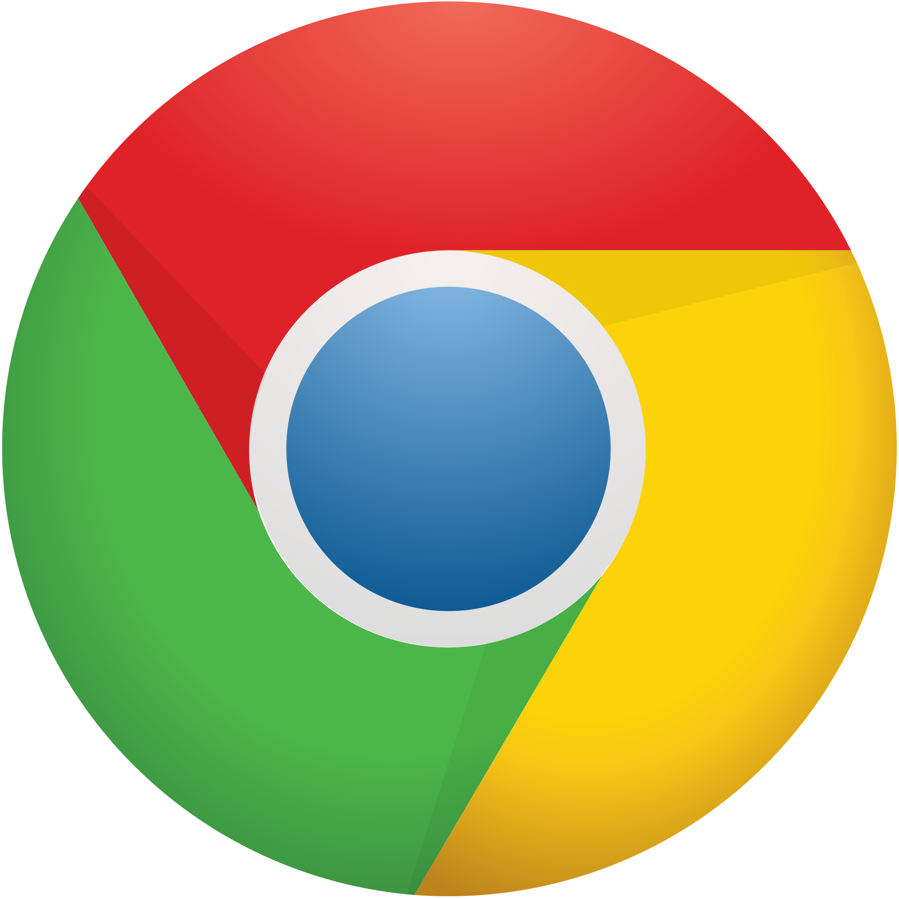

Mozilla Firefox on Mozilla-projektin tekemä vapaa, avoimen lähdekoodin verkkoselain, joka on saatavilla Windowsille, Linuxille, macOS:lle ja Androidille[6]. Yhteensopiva sähköpostiohjelma on Mozilla Thunderbird. Firefox on saatavilla myös suomeksi. Firefox käyttää Gecko-selainmoottoria.
Ohjelman kehitys alkoi, kun Dave Hyatt ja Blake Ross alkoivat karsia mielestään turhia ominaisuuksia Mozilla Suitesta. Ensimmäinen julkinen testiversio julkaistiin syyskuussa 2002 nimellä Phoenix. 14. huhtikuuta 2003 ohjelman nimi vaihdettiin Mozilla Firebirdiksi, koska BIOS-valmistaja Phoenix Technologies näki nimen rikkovan heidän tavaramerkkiään. Lopulta 9. helmikuuta 2004 nimi sai lopullisen muotonsa Mozilla Firefox, tai lyhyemmin vain Firefox. Nimenmuutos johtui siitä, että monet pelkäsivät Firebird-nimen sekoittuvan Firebird-nimiseen tietokantaohjelmistoon. Näiden tapausten takia ja tarpeesta suojella selaimen brändiä Firefox on nykyisin Mozilla Foundationin tavaramerkki.
ESR-versiot ovat yrityksille ja organisaatioille tarkoitettuja pidennetyn tuen versioita, joihin julkaistaan vain tietoturvapäivityksiä julkaisun jälkeen tai mahdollisesti vakauskorjauksia Mozillan harkinnan mukaan.[9] Näitä ovat olleet versiot 10, 17, 24, 31, 38, 45 ja 52.[7]
Google Chrome

Google Chrome
Google Chrome on Googlen kehittämä selainohjelma, joka pohjautuu Chromium-nimiseen avoimen lähdekoodin projektiin.[3] Chrome nousi StatCounter-sivuston mukaan maailman suosituimmaksi nettiselaimeksi toukokuussa 2012: Chromea käytti viikon aikana 32,8 prosenttia käyttäjistä.[4]
Chromium tukee HTML5:n koodekkeina Vorbista, Theoraa ja WebM:ää. Chrome tukee lisäksi AAC:ta ja MP3:a. Tammikuussa 2011 Chromen tuotejohtaja Mike Jazayeri ilmoitti, ettei Chrome, kuten Chromiumkaan, enää tue H.264-videoformaattia HTML5-soittimessaan.[11] Chrome käyttää selainmoottorina Blink-selainmoottoria muissa patsi iOS-versiossa, jossa käytössä on WebKit. Javascriptin tulkintaan se käyttää V8:a. Aiemmin käytössä oli WebKit.
Googlen tuotteiden käyttöehtojen (käytössä myös muun muassa Gmail- ja Google Docs -palveluissa) kohta 11 antaa Googlelle kaikki oikeudet käyttää sillä kirjoitettuja tekstejä, esimerkiksi blogi- tai sähköpostimerkintöjä. Tätä seikkaa kritisoitiin erityisesti Chromen julkaisun yhteydessä, ja niinpä Google päätyikin muuttamaan käyttöehtojaan selaimen kohdalla.[12]
Internet Explorer
Internet Explorer
Windows Internet Explorer (aiemmin Microsoft Internet Explorer, lyhenteenä IE) on verkkoselain, joka toimitetaan Microsoftin Windows-käyttöjärjestelmän mukana. IE:stä on julkaistu versioita myös muille alustoille, kuten Macintoshille, HP-UXille ja Solarikselle. Muita kuin Windows-versiota ei enää kehitetä
Internet Explorerin ensimmäinen versio 1.0 julkaistiin Microsoft Plus! -paketissa[1] Windows 95:lle vuonna 1995. Microsoft osti selainteknologiansa Spyglass Inc. -yhtiöltä, jonka oma selain, Spyglass Mosaic, perustui teknisesti NCSA Mosaiciin.[2]
Internet Explorerin tietoturva ja yleisiä web-standardeja kunnioittamattomat ratkaisut ovat kohdanneet arvostelua. Macintosh-IE:n myöhemmät versiot tukivat läpinäkyviä PNG-kuvia ja CSS-tyylisivuja paremmin kuin Windows-sisarensa. Internet Explorer 8:ssa jälkimmäiseen on kiinnitetty entistä suurempaa huomiota ja selain läpäisee Acid2-testin[3] mutta ei läpäise Acid3-testiä, vaan saa 20/100 pistettä.